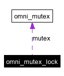

Main Page
|
Modules
|
Namespace List
|
Class Hierarchy
|
Compound List
|
File List
|
Compound Members
|
File Members
omni_mutex_lock Class Reference
#include <
omnithread.h
>
Collaboration diagram for omni_mutex_lock:

[
legend
]
List of all members.
Public Member Functions
omni_mutex_lock
(
omni_mutex
&m)
~omni_mutex_lock
(
void
)
Constructor & Destructor Documentation
omni_mutex_lock::omni_mutex_lock
(
omni_mutex
&
m
)
[inline]
omni_mutex_lock::~
omni_mutex_lock
(
void
)
[inline]
The documentation for this class was generated from the following file:
omnithread.h
Generated on Mon Jul 12 15:02:44 2004 for GNU Radio 2.x by
1.3.3
 1.3.3
1.3.3